<!DOCTYPE lake>
<h1 data-lake-id="WklQ0" id="WklQ0"><span data-lake-id="u6be10580" id="u6be10580">串口登录</span></h1><h2 data-lake-id="UsCqY" id="UsCqY"><span data-lake-id="u738dbf79" id="u738dbf79">串口连接</span></h2><p data-lake-id="u4c2e1185" id="u4c2e1185">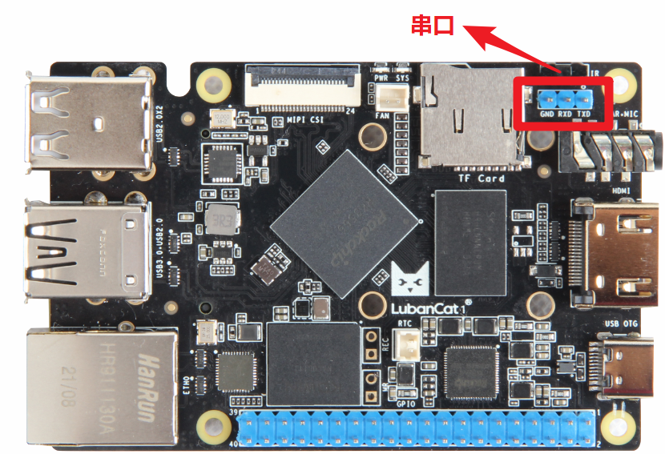</p><p data-lake-id="u29e34215" id="u29e34215"><span data-lake-id="u0bd333e0" id="u0bd333e0">连接方式</span></p><span class="yuque-card-unsupported">[codeblock]</span><p data-lake-id="u9c979e24" id="u9c979e24">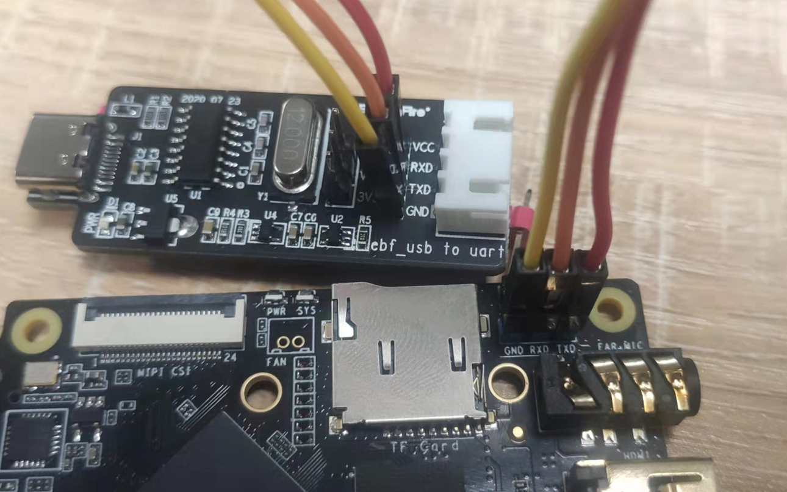</p><h2 data-lake-id="gVAJ3" id="gVAJ3"><span data-lake-id="u35e853b7" id="u35e853b7">登录</span></h2><p data-lake-id="u2b8a6d93" id="u2b8a6d93"><span class="lake-fontsize-12" data-lake-id="ub38e812b" id="ub38e812b" style="color: rgb(64, 64, 64); background-color: rgb(252, 252, 252)">安装MobaXterm工具</span></p><p data-lake-id="u9918cc2a" id="u9918cc2a"><span class="lake-fontsize-12" data-lake-id="u799c7236" id="u799c7236" style="color: rgb(64, 64, 64); background-color: rgb(252, 252, 252)">用电脑连接串口模块，然后打开电脑的设备管理器，然后查看端口的名字</span></p><p data-lake-id="uf25215e9" id="uf25215e9"></p><p data-lake-id="u1a613815" id="u1a613815"><span class="lake-fontsize-12" data-lake-id="udd37a7d9" id="udd37a7d9" style="color: rgb(64, 64, 64); background-color: rgb(252, 252, 252)">然后打开</span><span class="lake-fontsize-12" data-lake-id="u14f49703" id="u14f49703" style="color: rgb(64, 64, 64); background-color: rgb(252, 252, 252)"> </span><span class="lake-fontsize-9" data-lake-id="u6985345d" id="u6985345d" style="color: rgb(231, 76, 60); background-color: rgb(252, 252, 252)">MobaXterm</span><span class="lake-fontsize-12" data-lake-id="ub88fb4ed" id="ub88fb4ed" style="color: rgb(64, 64, 64); background-color: rgb(252, 252, 252)"> </span><span class="lake-fontsize-12" data-lake-id="uc5250f47" id="uc5250f47" style="color: rgb(64, 64, 64); background-color: rgb(252, 252, 252)">软件,点击图标 sessions 即可弹出 session setting，选择Serial。</span></p><p data-lake-id="u28efa251" id="u28efa251"><span class="lake-fontsize-12" data-lake-id="u890742fc" id="u890742fc" style="color: rgb(64, 64, 64); background-color: rgb(252, 252, 252)">我们选择正确的串口，设置波特率为1500000，关闭流控，具体设置如下图所示</span></p><p data-lake-id="ud94dd83d" id="ud94dd83d">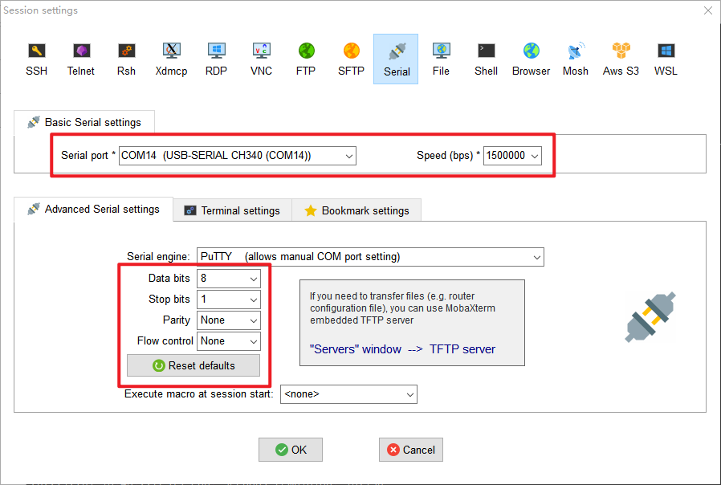</p><h2 data-lake-id="guo8M" id="guo8M"><span data-lake-id="u12b3d223" id="u12b3d223">开机</span></h2><p data-lake-id="u4114e008" id="u4114e008"><span class="lake-fontsize-12" data-lake-id="ue2894eac" id="ue2894eac" style="color: rgb(64, 64, 64); background-color: rgb(252, 252, 252)">开机后可以看到很多的打印信息，这是系统运行的标志</span></p><p data-lake-id="u70b7f2b7" id="u70b7f2b7">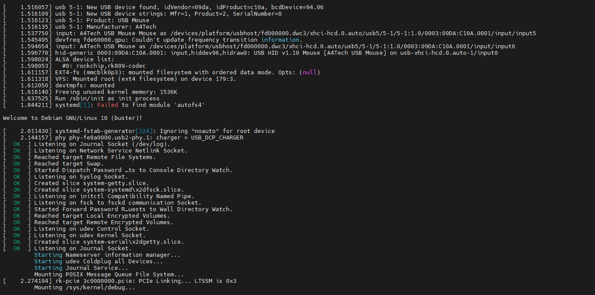</p><p data-lake-id="uba5c48af" id="uba5c48af"><span class="lake-fontsize-12" data-lake-id="u79b00da3" id="u79b00da3" style="color: rgb(64, 64, 64); background-color: rgb(252, 252, 252)">等待一会儿后就可以登录了，如图下</span></p><p data-lake-id="ubca3e97d" id="ubca3e97d">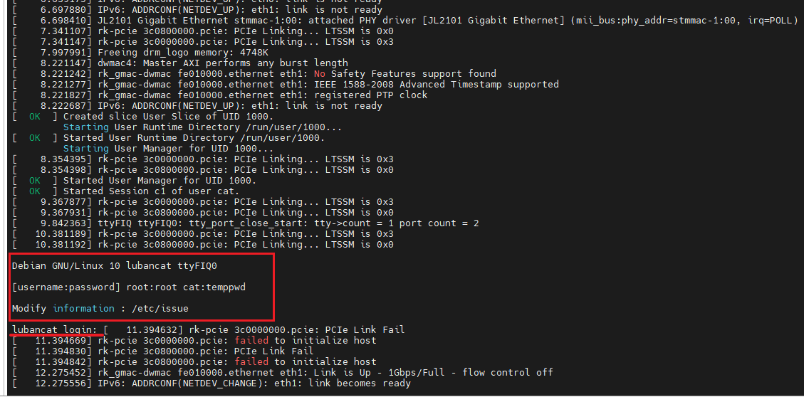</p><p data-lake-id="ud382d369" id="ud382d369"><span class="lake-fontsize-12" data-lake-id="uaf171a21" id="uaf171a21" style="color: rgb(64, 64, 64); background-color: rgb(252, 252, 252)">先输入用户名（区分大小写） 然后再输入密码(输入密码是不会有文字提示的，所以需要注意中文输入法和大写)</span></p><h1 data-lake-id="CkGsQ" id="CkGsQ"><span data-lake-id="u94033906" id="u94033906">ssh连接</span></h1><ul list="u0808d002"><li data-lake-id="ub6d46c56" fid="u5ef60f03" id="ub6d46c56"><span class="lake-fontsize-12" data-lake-id="u17bbbba5" id="u17bbbba5" style="color: rgb(64, 64, 64); background-color: rgb(252, 252, 252)">板卡烧录后的第一次启动需要等待大概一分钟完成初始化操作</span></li><li data-lake-id="ucbd7ce12" fid="u5ef60f03" id="ucbd7ce12"><span class="lake-fontsize-12" data-lake-id="u510ebad1" id="u510ebad1" style="color: rgb(64, 64, 64); background-color: rgb(252, 252, 252)">打开网络设置</span></li></ul><p data-lake-id="uace928ac" id="uace928ac" style="text-indent: 2em">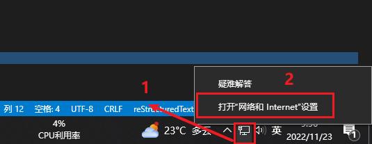</p><ul list="u08b43e38"><li data-lake-id="uef19d80f" fid="ue0bf2fbe" id="uef19d80f"><span class="lake-fontsize-12" data-lake-id="uaee670ee" id="uaee670ee" style="color: rgb(64, 64, 64); background-color: rgb(252, 252, 252)">查看当前网络状态</span></li></ul><p data-lake-id="u2d6cd333" id="u2d6cd333" style="text-indent: 2em">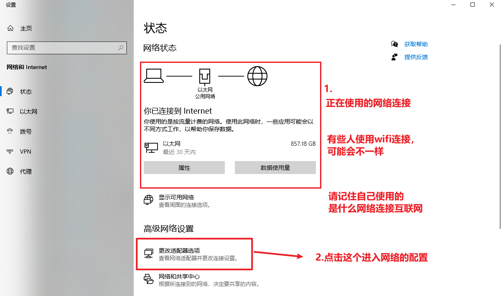</p><ul list="u3756c61e"><li data-lake-id="ud1d49b76" fid="u924e9c79" id="ud1d49b76"><span class="lake-fontsize-12" data-lake-id="u37f010f4" id="u37f010f4" style="color: rgb(64, 64, 64); background-color: rgb(252, 252, 252)">查看当前所有的网络连接（标注着“Remote NDIS based Internet”就是我们的板卡）</span></li></ul><p data-lake-id="u0c7f4f89" id="u0c7f4f89" style="text-indent: 2em">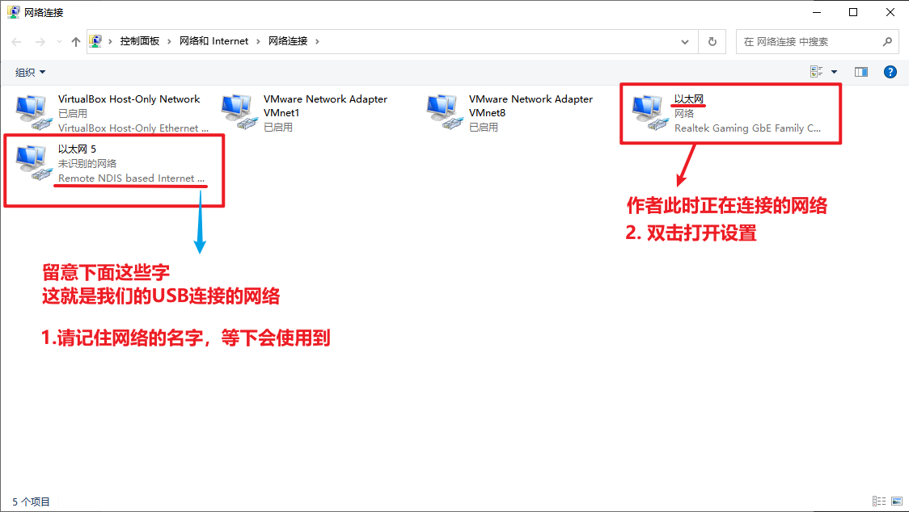</p><ul list="u895d4436"><li data-lake-id="ue5379dab" fid="ud2fb1b41" id="ue5379dab"><span class="lake-fontsize-12" data-lake-id="ubbbb3217" id="ubbbb3217" style="color: rgb(64, 64, 64); background-color: rgb(252, 252, 252)">配置网络共享</span></li></ul><p data-lake-id="uc58806cf" id="uc58806cf" style="text-indent: 2em">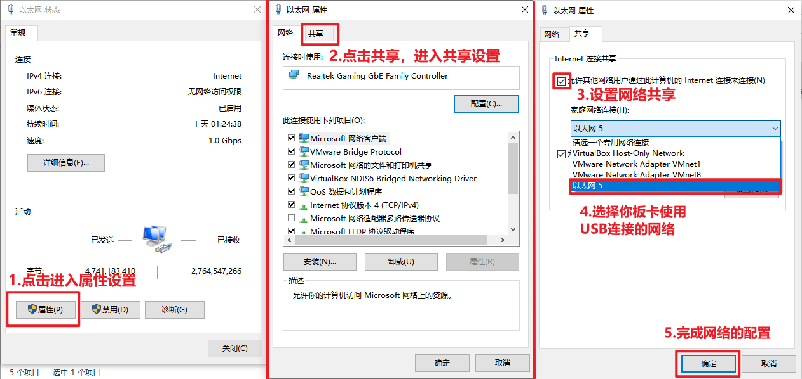</p><ul list="ubd83ae33"><li data-lake-id="u982e421b" fid="ue6d8be6f" id="u982e421b"><span class="lake-fontsize-12" data-lake-id="ub733526c" id="ub733526c" style="color: rgb(64, 64, 64); background-color: rgb(252, 252, 252)">完成后就可以使用MobaXterm来连接我们的板卡了</span></li><li data-lake-id="ue8894b26" fid="ue6d8be6f" id="ue8894b26"><span class="lake-fontsize-12" data-lake-id="u96122c80" id="u96122c80" style="color: rgb(64, 64, 64); background-color: rgb(252, 252, 252)">打开MobaXterm软件，点击“Session”创建连接</span></li></ul><p data-lake-id="u2ef39b39" id="u2ef39b39" style="text-indent: 2em">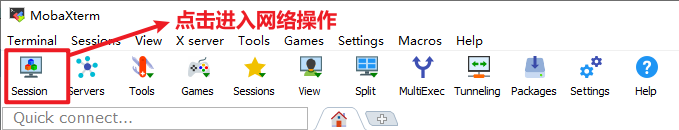</p><ul list="u03e46d65"><li data-lake-id="u251d71fd" fid="u00500239" id="u251d71fd"><span class="lake-fontsize-12" data-lake-id="uc50ee53a" id="uc50ee53a" style="color: rgb(64, 64, 64); background-color: rgb(252, 252, 252)">然后按照以下配置输入</span></li></ul><p data-lake-id="udf3e80f7" id="udf3e80f7" style="text-indent: 2em">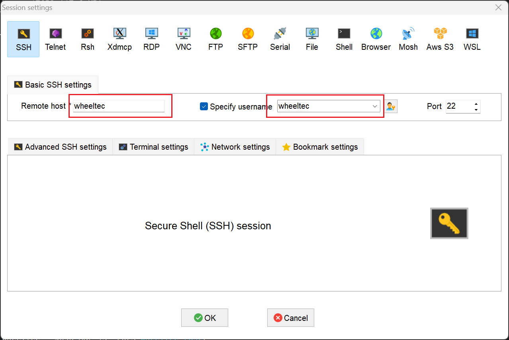</p><p data-lake-id="u2c43d4f4" id="u2c43d4f4" style="text-indent: 2em"><span data-lake-id="u94bd8a3a" id="u94bd8a3a">登录需要密码输入:</span><code data-lake-id="u16210f77" id="u16210f77"><span data-lake-id="uc4c55d2e" id="uc4c55d2e">dongguan</span></code></p><p data-lake-id="uaa543324" id="uaa543324" style="text-indent: 2em"><br/></p><h1 data-lake-id="vTEQc" id="vTEQc"><span data-lake-id="u44bc1d05" id="u44bc1d05">修改用户密码</span></h1><span class="yuque-card-unsupported">[codeblock]</span><blockquote data-lake-id="u68ac71c0" id="u68ac71c0"><p data-lake-id="uf70ff205" id="uf70ff205"><strong><span data-lake-id="u98c4aa83" id="u98c4aa83">输入新密码即可</span></strong></p></blockquote><p data-lake-id="ub6cda23f" id="ub6cda23f"><br/></p>